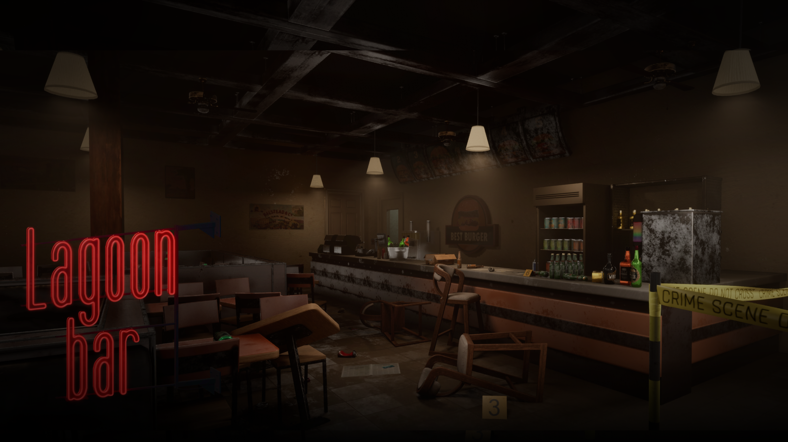

2026 · Ongoing
Lagoon Bar ↗
A first-person psychological horror game about selective memory and family trauma. Looping spaces and shifting clues make the player doubt their own reading of the past.
Portfolio · 2024 – 2026
Games first, then the films, installations and buildings that taught me how space carries a story.

2026 · Ongoing
A first-person psychological horror game about selective memory and family trauma. Looping spaces and shifting clues make the player doubt their own reading of the past.
Science-fiction puzzle
A first-person puzzle game set in a mycelium-grown rehabilitation facility, where investigating memories reveals how care becomes a means of control.
Tabletop · In development
A tabletop game drawn from Chinese folklore. Cooperative escort missions feed into team-based tactical battles through supernatural characters, event cards and shared resources.
Short film · UCLA
Script development and art design, turning character goals and emotional beats into scene breakdowns, shot lists and storyboards.
2025VR experience concept
An attention-training experience for children with ADHD, developed with researchers across disciplines: user journeys, interaction flows and adaptive feedback.
2024Spatial installation · AA Summer School
An installation asking how school rules define a “bad student”, built from behavioural experiments, fabric, thread, chairs and projection.
2024Public sculpture · Hunan University, Changsha
A co-designed rising wave of weathering-steel and stainless-steel columns about intergenerational continuity, taken from 3D model to unveiling.
2026Chinatown community garden · Liverpool
A garden proposal around growing, preparing and sharing food and tea, grounded in site research, local history and interviews with residents.
2025Design-build workshop · Bali, Indonesia
Interaction design for a sensor-driven shading system that adapts to its environment, prototyped digitally and built at full scale.
2024I studied architecture and kept drifting toward the stories inside buildings. Now I design games, writing the world and shaping the level so the two say the same thing.